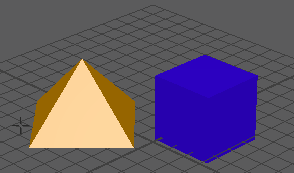
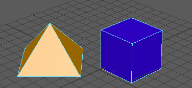

通过交互控制将对象捕捉到一起
- 选择。
- 单击第一个要捕捉的对象上的一点。
- 单击第二个要捕捉到的对象上的一点。
- 将出现一个箭头显示对象如何捕捉在一起。要更改点，在任一对象上单击或拖动新点。
- 按 Enter 键将对象捕捉到一起。

“捕捉到一起工具”(Snap Together Tool)通常移动并旋转对象以使点接触。使用工具设置可使该工具只移动而不旋转对象。
提示： 也可以对多边形边使用“捕捉到一起工具”(Snap Together Tool)。在对象上单击鼠标右键，然后从标记菜单选择“边”(Edge)进入边选择模式，然后对多边形的边应用“捕捉到一起工具”(Snap Together Tool)。
在一点处将两个对象捕捉到一起
提示： 切换到“顶点”(Vertex)模式以选择对象的点。
- 选择要移动的点。
- 按住 Shift 键并选择要捕捉到的点。
- 选择。
在两点处将两个对象捕捉到一起
提示： 切换到“顶点”(Vertex)模式以选择对象的点。
- 在将会移动的对象上选择两个点。
- 按住 Shift 键并在要捕捉到的对象上选择两个点。
- 选择。
Maya 移动第一个对象，使在每个对象上选择的第一个点接触，在每个对象上选择的第二个点接触。

Maya 将移动对象使两个选定点接触。
在三点处将两个对象捕捉到一起
提示： 切换到“顶点”(Vertex)模式以选择对象的点。
- 在将会移动的对象上选择三个点。
- 按住 Shift 键并在要捕捉到的对象上选择三个点。
- 选择。
Maya 将移动对象使三个选定点接触。